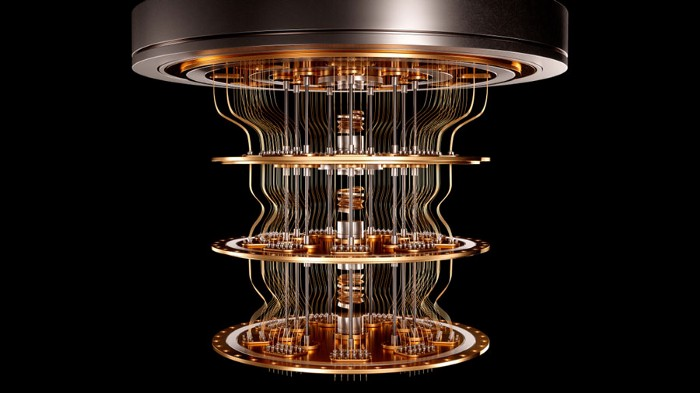

Enter quantum
Every once in a while, a convergence of knowledge, progress and will occurs, and
changes the course of human history.
I wholly believe we are on the cusp of this with quantum computing.
Ironically not a leap, these moments are typically an accelerating continuum, where things seemingly
disparate suddenly come together. People around the world have been working on different pieces of
the puzzle; there’s a moment where the whole jigsaw comes into view. From democracy to understanding
the evolution process, from fire to the internet, this has happened throughout our time on the
planet. How extraordinary that humans get to live through multiple moments of this kind in a normal
lifespan.

Why You Should Be Very Worried About The Supply Chain
In June, King Yuan Electronics Co, one of the world’s largest chip-testing companies,
temporarily suspended operations due to COVID-19 infections at a factory in central Taiwan. The
technology world was already struggling with supply chain issues at the time. This exacerbated the
shortage of semiconductor chips which has been estimated to cost car manufacturers $210 billion in
revenue this year alone. The White House acknowledges that this disruption could knock one full
percentage point off the GDP, resulting in waves of shutdowns, and “hurt the hundreds of thousands
of U.S. workers employed in manufacturing jobs across the automotive and heavy trucking sectors.”
JupyterLab Desktop App — A Game Changer for Using Notebooks? Probably Not
Although major python IDEs (e.g., Visual Studio Code, PyCharm, and recently DataSpell)
all support editing Jupyter Notebooks, JupyterLab is still my go-to IDE when I use notebooks for my
data science projects. As an interactive IDE, JupyterLab allows us to visualize the data (e.g.,
tabular data, images) step by step in a cell-based organization.


How did Mars get its two “impossible” moons?
As far as we know, there are exactly three ways that a planet can wind up possessing
one or more moons. The first way is from a circumplanetary disk, where the material that accrues
around a proto-star not only fragments into planetesimals that grow and evolve, but that the largest
proto-planets acquire their own disks of material around them, which leads to moons. This primarily
applies to gas giants, and is likely responsible for most of the moons in the Jovian, Saturnian, and
Uranian systems.
The second way is through gravitational capture, which explains moons with bizarre orbital
orientations and densities that don’t match up with the parent planet’s material. This applies to
moons like Saturn’s Phoebe or Neptune’s Triton, which likely both originated from the Kuiper belt.
And finally, the third way is through a major collision, which kicks up debris that coalesces into
one or more natural satellites: the likely origin of not only Earth’s moon, but all of the moons of
Pluto.